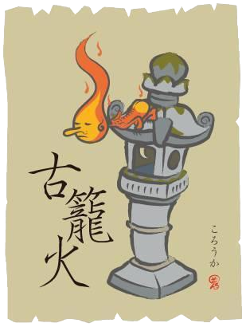

古籠火
|  |
簡介古時候，人們將莫名其妙的火分為很多類，如有陰火、陽火、鬼火，還有古代戰場上千萬士兵廝殺後留下血汗所燃起的熊熊古戰場火。古籠火也屬於其中一類，它本是一個過於老舊的燈籠，被長時間閒置不用，於是其精氣化為妖怪，屬於付喪神的一種。 傳說傳說在草木也入眠的丑時三刻，如過在山間行走，可能會見到一團團的碧火，火焰閃爍跳躍漸漸飛近，仔細看，火焰中赫然是人的臉孔。它是由鬼魂或精靈附靈於老舊的燈籠所變，在黑暗中會自然發光，不會傷害人類。這一點倒是跟古戰場火的性質很像，只是出來刷一下存在感。 怪談古籠火自己會發出精氣。到了夜裡，四下無人時，燈籠就會發出朦朧的光。 江戶的武士田村誠一郎受命調職，並從搬到了作為新的住處的古舊房屋。某日田村在家與家人在吃晚飯的時候，庭院突然亮光一片。田村跑出來看是誰在放火，卻什麼人也沒有看到。後來有老的奉公人告訴他，這個其實是古籠火，古老的石燈籠由於為鬼火侵襲而發生了自燃。 |